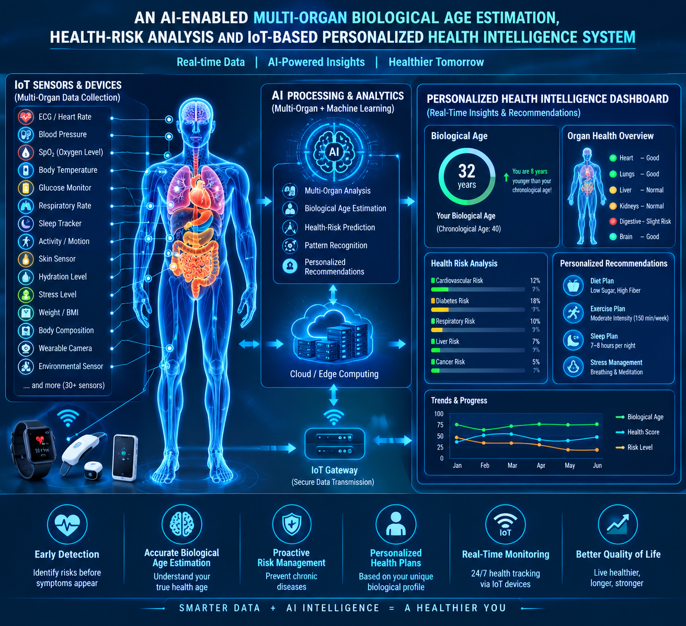
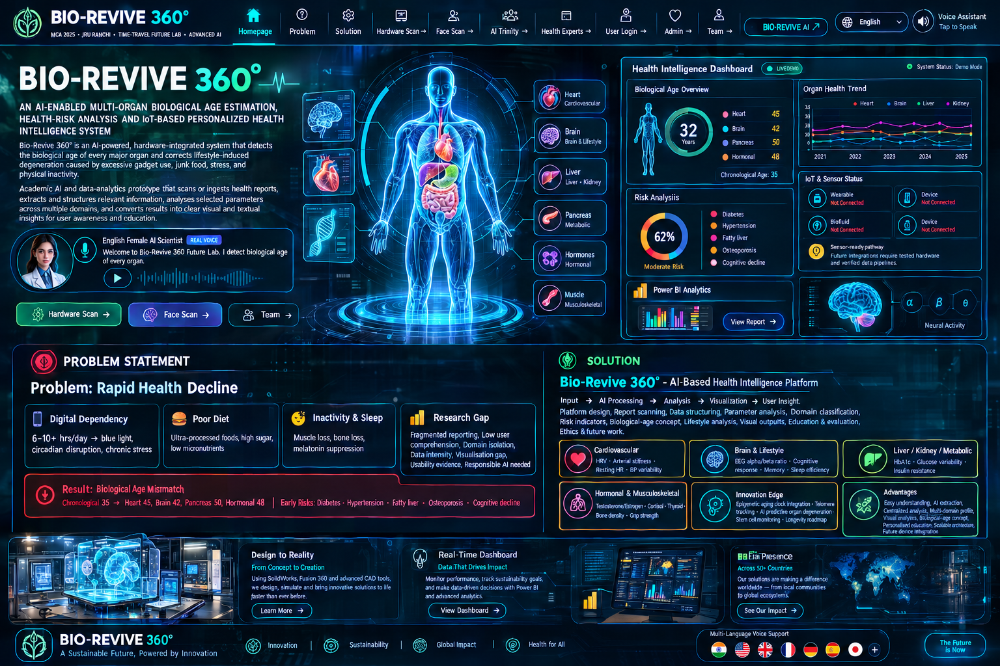

📱
Digital Dependency
6–10+ hrs/day → blue light, circadian disruption, chronic stress
ACADEMIC AI • HEALTH DATA ANALYTICS • FUTURE IoT RESEARCH
AI-ENABLED MULTI-DOMAIN HEALTH DATA ANALYTICS & BIOLOGICAL-AGE RESEARCH
An academic prototype that helps structure selected health-report parameters, explore educational health indicators, and present understandable data insights—with a pathway toward verified IoT integration.
The goal is to make complex health information easier to explore. Biological-age estimates, where implemented and validated, are model outputs—not direct measurements of every organ or a medical diagnosis.
Welcome to Bio-Revive 360 Future Lab. Explore health data research, educational indicators, and our future hardware integration roadmap.

Explore the research workflow through interactive indicators, visual summaries and responsible AI concepts. Images are illustrative, not evidence of clinical validation.

Bio-Revive 360° explores the challenge of making complex, lifestyle-related health information easier to understand. The following points are the original project problem framing.
6–10+ hrs/day → blue light, circadian disruption, chronic stress
Ultra-processed foods, high sugar, low micronutrients
Muscle loss, bone loss, melatonin suppression
Fragmented reporting, Low user comprehension, Domain isolation, Data intensity, Visualisation gap, Usability evidence, Responsible AI needed
Chronological 35 → Heart 45, Brain 42, Pancreas 50, Hormonal 48 | Early Risks: Diabetes · Hypertension · Fatty liver · Osteoporosis · Cognitive decline
This is the original illustrative project example, not a clinical prediction or validated assessment.
Input → AI Processing → Analysis → Visualization → User Insight. Platform design, Report scanning, Data structuring, Parameter analysis, Domain classification, Risk indicators, Biological-age concept, Lifestyle analysis, Visual outputs, Education & evaluation, Ethics & future work.
HRV · Arterial stiffness · Resting HR · BP variability
EEG alpha/beta ratio · Cognitive response · Memory · Sleep efficiency
HbA1c · Glucose variability · Insulin resistance
Testosterone/Estrogen · Cortisol · Thyroid · Bone density · Grip strength
Epigenetic aging clock integration · Telomere tracking · AI predictive organ degeneration · Stem cell monitoring · Longevity roadmap
Easy understanding, AI extraction, Centralized analysis, Multi-domain profile, Visual analytics, Biological-age concept, Personalised education, Scalable architecture, Future device integration
Bio-Revive 360° is an AI-powered, hardware-integrated system that detects the biological age of every major organ and corrects lifestyle-induced degeneration caused by excessive gadget use, junk food, stress, and physical inactivity.
Academic AI and data-analytics prototype that scans or ingests health reports, extracts and structures relevant information, analyses selected parameters across multiple domains, and converts results into clear visual and textual insights for user awareness and education.
MCA 2025 • JRU RANCHI • TIME-TRAVEL FUTURE LAB • ADVANCED AI
BIO-REVIVE 360° · AI-ENABLED MULTI-ORGAN BIOLOGICAL AGE ESTIMATION, HEALTH-RISK ANALYSIS AND IoT-BASED PERSONALIZED HEALTH INTELLIGENCE SYSTEM · JRU Ranchi · MCA 2025
Team: Ashish MC/25/018 | Gudiya MC/25/044 | Harshvardhan MC/25/004 | Saksham MC/25/010 • Futuristic Software Lab
An original, animated wireframe concept viewer inspired by engineering CAD workflows. Rotate the model, switch display modes and inspect the live viewport. This is a browser visualization—not a native SolidWorks or Fusion 360 CAD file.
Generated in real time with Canvas 2D geometry; no CAD software or external model file required.
*Actual frame rate depends on device performance. All telemetry here is illustrative.
These domains organize potential indicators for an educational research workflow. Available measurements depend on the report, sensor, and validated model; no organ-specific age is inferred from missing data.
Examples: resting heart rate, blood pressure, and selected cardiovascular measurements when supplied.
Vitals & circulationExplore sleep, activity, stress-related self-reports, and cognitive-wellbeing context.
Lifestyle contextOrganize relevant reported laboratory values such as ALT and AST for educational review.
Lab-report parametersReview supplied creatinine and eGFR values in context, with clinical interpretation left to qualified professionals.
Renal indicatorsExplore values such as fasting glucose and HbA1c when available in the report.
Metabolic markersHormone-related data depend on the specific test, reference interval, age, and clinical context.
Context-dependentPotential inputs include activity, strength tests, mobility, and bone-density reports if available.
Movement & strengthDesigned for future sensor ingestion. This page does not claim live device connectivity unless a real integration verifies it.
Integration roadmapShow which values were supplied, which are missing, and how each demo indicator is calculated.
Transparent prototypeA browser-rendered demonstration dashboard with sample data, responsive charts and explainable visuals. It is not a connected Power BI report or a clinical monitoring system; no live patient data is shown.
Sample index only · not real patient measurements
Illustrative project stages, not model accuracy or health outcomes.
To embed your own Power BI report, replace the placeholder URL in the source with your approved, shareable report embed URL. Never publish private or patient-identifiable reports publicly.
Awaiting your report embed URL
const POWER_BI_EMBED_URL = "PASTE_APPROVED_EMBED_URL_HERE";
Explore data responsibly; validate before drawing conclusions.

Future integrations require tested hardware and verified data pipelines.

Keep assumptions, sources and limitations visible.
Enter a few optional values to see a transparent, rule-based educational summary. This demo does not calculate biological age, diagnose disease, or replace clinical interpretation.
Accept user-entered values or, in a future module, parse a report with explicit user review.
Normalize units, identify missing fields, and show extracted values before analysis.
Present source values, transparent rules, limitations, and educational next steps.